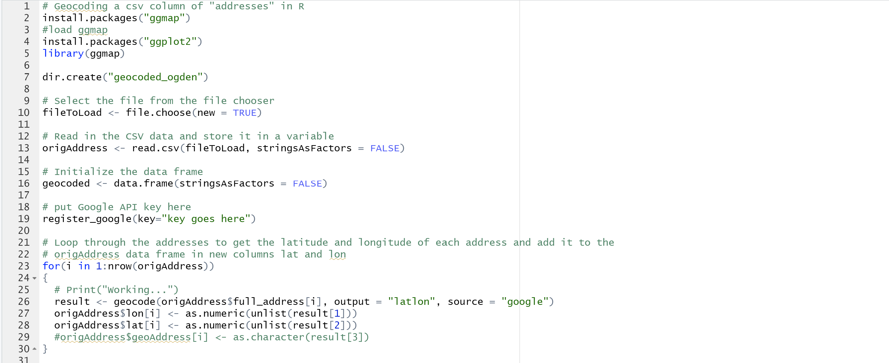
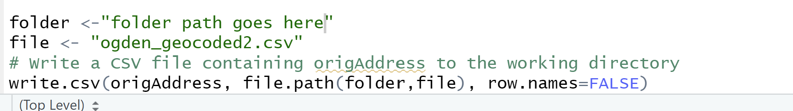
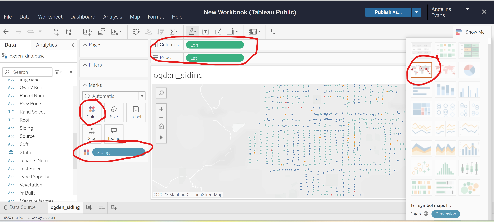
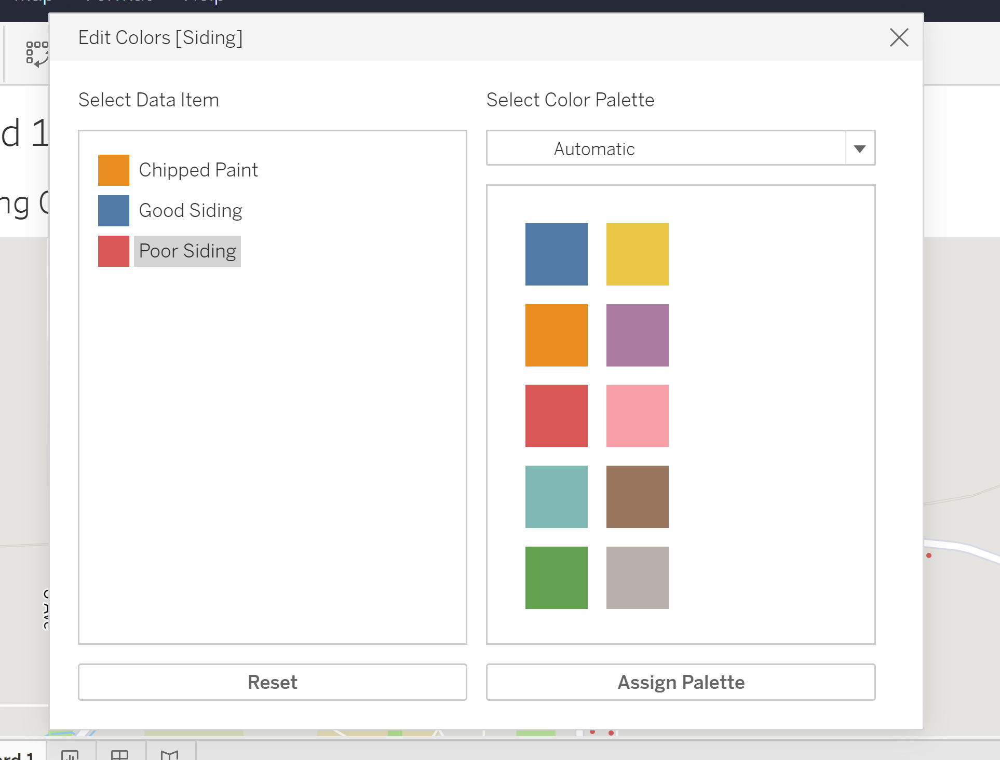
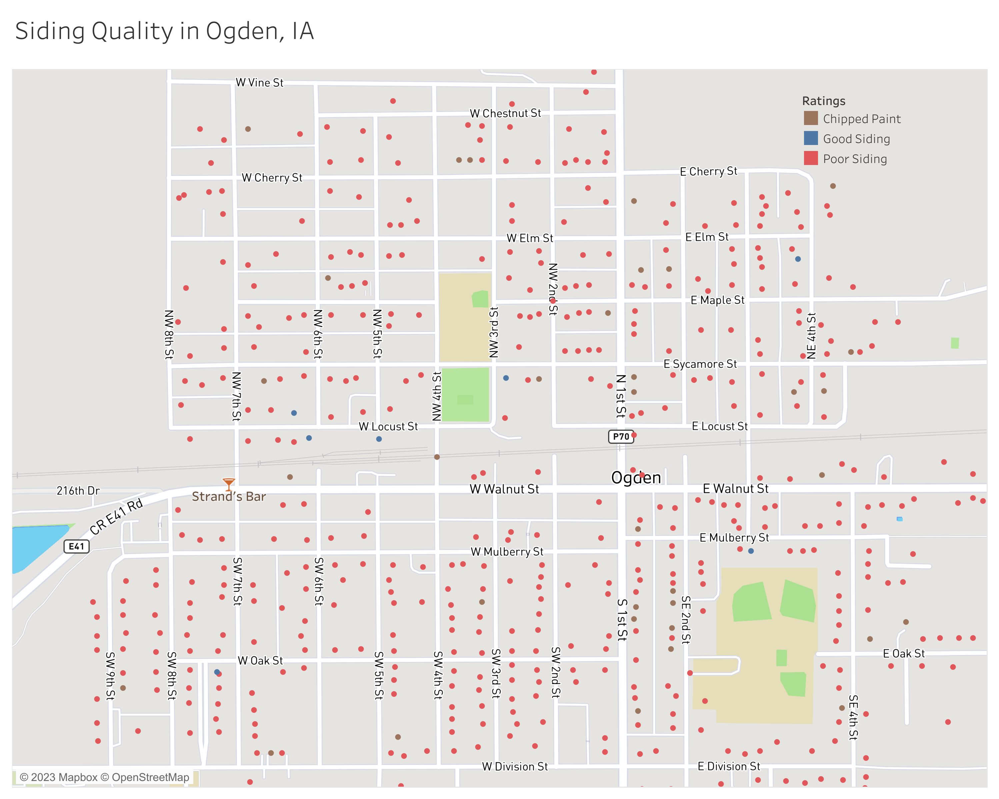

Creating Geographic Visualizations of House Quality
Intro
In this guide, I will be sharing the steps I took to create geographic visualizations in Tableau related to housing quality. To demonstrate the process, I will be using data from the city of Ogden, Iowa. Another AI Housing team member, Gavin, created a guide on evaluating cities using Ogden as an example. In hopes that the data will appear familiar, I will be using the resulting data from his city evaluation guide.
Collecting Addresses from City
Steps for address collection and dataset cleaning are shown in the address collection and cleaning section of Gavin’s guide. It is very important that you have these things available in the dataset:
House number
Street name
City
State
Quality of house characteristics you wish to use in your geographic visualizations (ex. AI outputs for siding, vegetation, gutter).
If you followed the steps in the address collection and cleaning section of Gavin’s guide, your dataset might have some columns that look like this:
I suggest creating a new column that has combines contents from address, city, and state. I auto-populated the city column with the city name (Ogden) and the state column with the state name (Iowa). In a new column and new empty cell, I used the & to combine the contents of three columns. My function is:
=Cell&“,”&Cell&“,”Cell
=A2&“,”&B2&“,”&C2
Then I auto-populated the rest of the cells to utilize the same function.
Geocoding Addresses in R
Using the addresses provided from the dataset, I acquired coordinates that can be used to map the address locations. There are several ways to geocode addresses. If you are familiar with ArcGIS or QGIS, you can use that but I had major issues with QGIS geocoding. I used the MMQGIS plugin and had multiple problems. First, it continued to crash and second, I could never successfully geocode all the addresses I needed to. Many of my addresses were missing and other team members had the same issue when using MMQGIS. So I would advise against starting with QGIS, unless it has worked well for you in the past.
You can also use python or R. I geocoded addresses in RStudio. I followed the approach provided by StoryBench. I made a few changes to the code from StoryBench. The code and steps are shown below.
Start by installing the ggmap package (no need to install ggplot2 unless you later want to plot addresses in R).
Load in the csv file (Ogden database).
Create data frames.
Register a Google API key. Put the key in the “key goes here” spot.
For loop: for each address, you receive a latitude and longitude. They should go in their respected columns (lat and long). Line 26 has the column name full_address. Change this to the name of the column that has your full addresses.
Write the contents of origAddress to a new file (in this case, ogden_geocoded2.csv). Save the new file.


Once you have geocoded the addresses, you should have the latitude and longitude columns filled. Remove the NAs from the other columns.

Mapping addresses from csv file using Tableau
There are many different ways you can map these addresses. If you have access to ArcGIS pro, you can use that. I also like using QGIS, an open source software. In this guide I will be using Tableau because this is what I used for my final visualizations. We decided to use Tableau because we needed to create other visualizations (ex. graphs) with the data provided in the csv file.
1. Register and download Tableau
As a student, you can register to get Tableau Desktop free for one year. I was having installation issues, so I use Tableau Public, which is free to anyone. You can use either for these visualizations, but my steps will be for Tableau Public. The desktop version is very similar so you should be able to follow along if using Tableau Desktop.
If you are using Tableau Public, be sure to save you work by publishing.
2. Create a new workbook and upload new data
Once you click “Create”, you should be prompted to upload data from your computer. Select the csv file you wish to use.
3. Creating the map
Watching this video by TutorialsPoint helped me get started on mapping in Tableau.
After uploaded the data, click the sheet tab on the bottom. I renamed my sheet to ogden_siding. From the “Data” tab on the left side of the screen, find Lon and Lat and drag both to columns and rows at the top of the screen. Right click on Lon and Lat and make sure that Dimension is checked, not attribute or measure. When this is done, you can click the “Show Me” button on the upper right part of the screen. Click on the map that is circled in the image. You should then be able to see addresses on a map. Click size to shrink or grow the points. To show a particular housing attribute, drag the desired variable to the “Color” button that is circled under the marks section.
In my example, when the mouse hovers over a point, it will give the condition of the house’s siding.
At the top of the screen, go to Map -> Basemap -> Streets to add a streetmap.

4. Create a dashboard
Once you are satisfied with how your map looks, create a new dashboard at the bottom of the screen. Load in the sheet by dragging the sheet you want to use. In the dashboard, make edits to legend, title, and map scale.

You may wish to continue to experiment with point size, borders and halos once you see how it looks in the dashboard.
You can add more than one sheet to a dashboard. My example uses one sheet, the Ogden siding sheet. In my dashboard, I right-clicked the null attribute and clicked “exclude”. Now my map only shows houses with either chipped paint, poor siding or good siding.
5. Download dashboard as image
Once you are satisfied, download the dashboard. I downloaded my dashboard as an image.
From this I am able to see that the siding AI model determined that many of the houses in Ogden have poor siding.

Conclusion
This concludes the guide to mapping house quality. Hopefully this has given you information that is helpful when preparing and visualizing spatial data. Again, if you’re using Tableau Public, don’t forget save your work by publishing! My work has been lost a couple times because I forgot to publish).